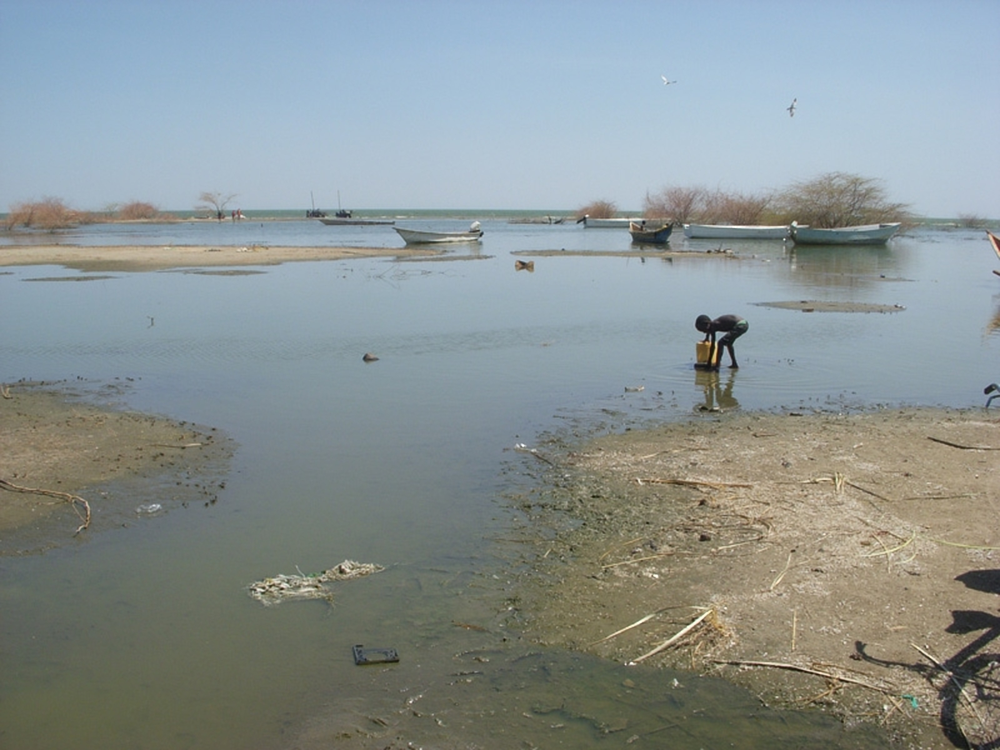
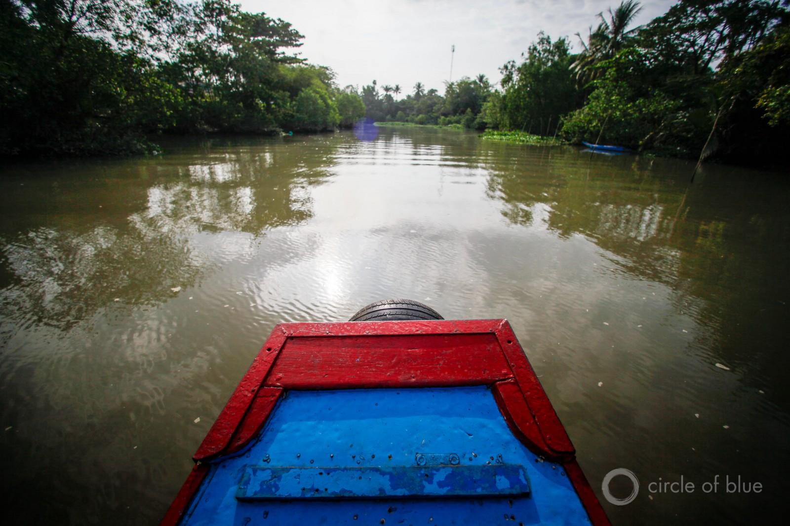
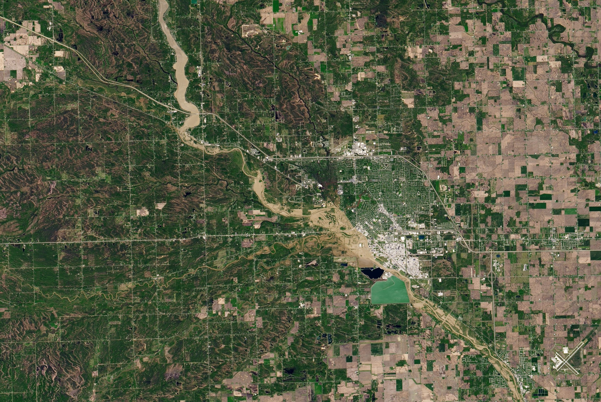
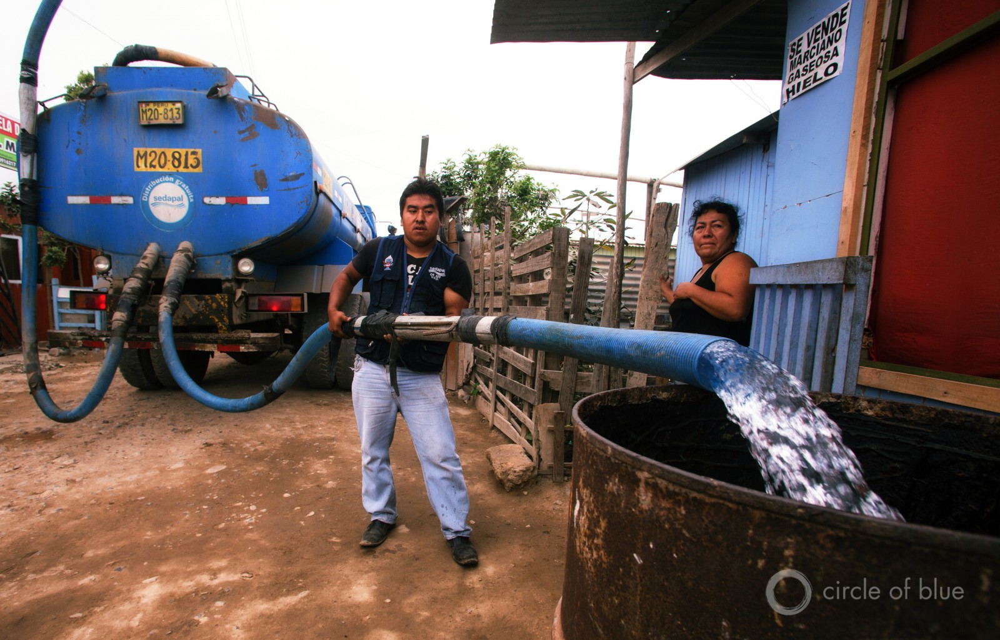
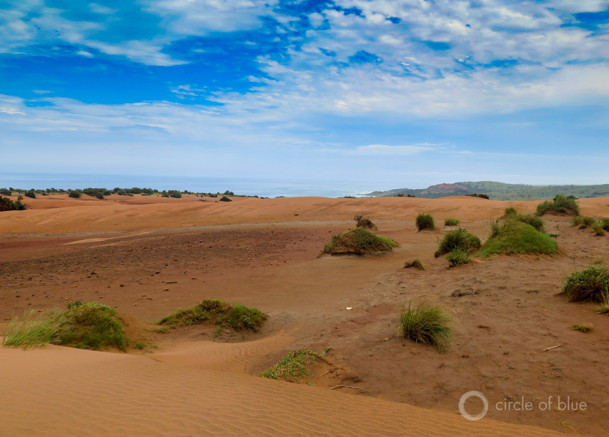
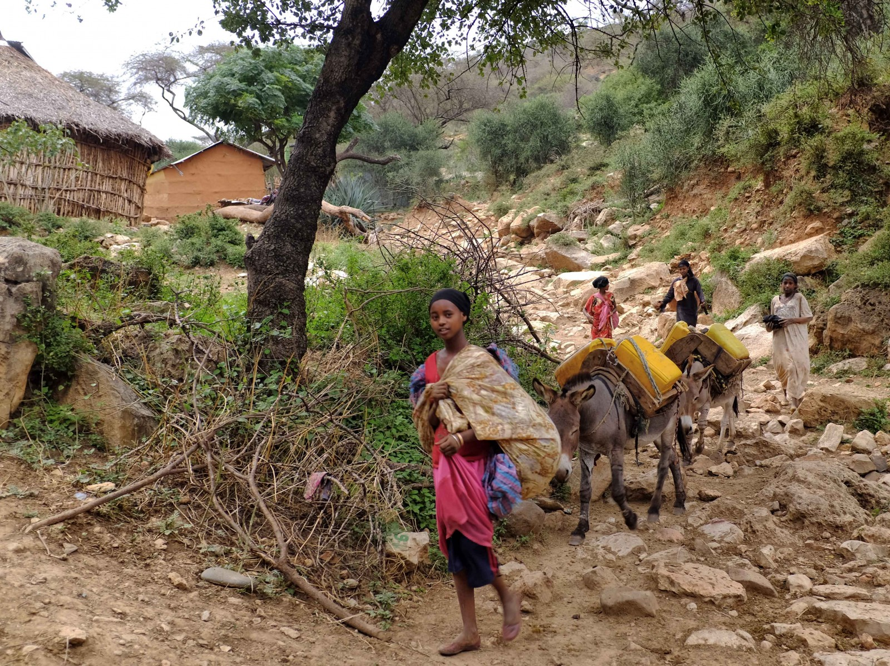

HotSpots H2O: Lower Mekong Nations Seek Greater Cooperation from China Following Recent Study

Delicate discussions over the future of the imperiled Mekong River could be further complicated by the findings of a new study, which claims that China withheld water from drought-hit downstream nations last year.
Using satellite data, Eyes on Earth, a U.S-based research and consulting firm, determined that precipitation in China’s Yunnan province, which the Mekong bisects, was slightly above average in 2019 between May and October.Based on these numbers, the river along the downstream border of Thailand and Laos was up to 3 meters (10 feet) below expected levels.
The Mekong begins in the Tibetan Plateau and touches China, Myanmar, Thailand, Laos, Cambodia, and Vietnam before emptying into the South China Sea.In 2019, countries along the Lower Mekong suffered their worst drought in more than a half century.
The Mekong supports more than 60 million people, and sustains a vibrant ecosystem.However, shifting climate conditions, plus a flurry of dam building, have begun to constrict water flows in recent years.
China’s role in the current drought, as well as in past dry spells, has been debated.The country controls 11 dams on the Upper Mekong, but it releases minimal data on how much Mekong water is used to fill these reservoirs.Chinese leaders have repeatedly denied any responsibility for the 2019 drought, claiming that dry conditions affected China’s portion of the Mekong last year as well.
The Eyes on Earth study tells a different story.
'The satellite data doesn’t lie, and there was plenty of water in the Tibetan Plateau, even as countries like Cambodia and Thailand were under extreme duress,' said Alan Basist, a co-author of the report.'There was just a huge volume of water that was being held back in China.'
Chinese authorities deny those claims, insisting that they did not withhold an unfair share of water.The Mekong River Commission, which collaborates with the governments of Laos, Thailand, Cambodia, and Vietnam in managing the Lower Mekong basin, also acknowledges that the amount of water withheld does not necessarily implicate China in the Lower Mekong drought.The MRC, however, is raising questions over China’s transparency.
'China, as an MRC dialogue partner, has provided its water level and rainfall data during flood season, from only two of its stations on the upper Mekong,' the organization told
Reuters .'The MRC has attempted to acquire dry season data from China, but no agreement has yet been reached.'
Currently, there are no formal water-sharing treaties between China and the other Mekong nations.In the wake of the report, the MRC is calling for increased cooperation from China, arguing that collaboration is necessary to sustain the health of the waterbody.
Posted On: 2020-04-20T00:00:00
Posted By: Kayla Ritter





Content Date: 2020-04-20
Download Date: 2021-05-12
Document ID: L0C04B5XR